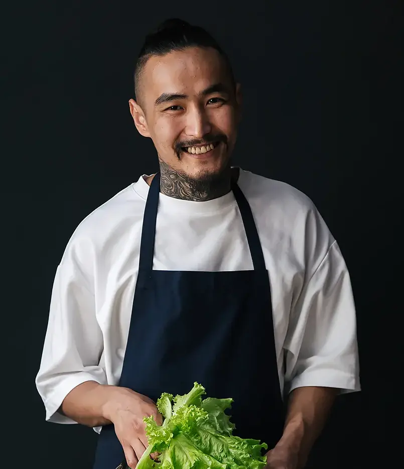

JOHN WASKER
BEER MASTER
John is a talented and dedicated beer master. Not a single beer recipe reaches our guests without his approval. He can find a perfect balance of tastes, maintaining the precision of the brewing process.

ANTHONY KIEDIS
CHEF
Being a generally versatile cook, Andrew is a sucker for grill food. Any meal involving grilled fish, meats, or vegetables lies within his masterful cooking skills. He creates great pairings for our beer.

TOMAS WELSH
MANAGER
He is the universal soldier of Beer Boutique. Thomas is a person that can help in the kitchen, bring the orders to guests, and watch over the stock. He keeps things in line even on the busiest hours.